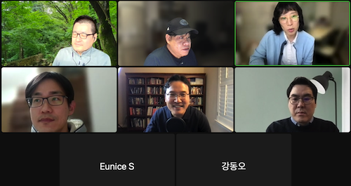

4 Session3 - Chapter5 & 6
4.1 발표자료
4.2 요약
- 체크인 질문: 네글자로 한주 표현 & Why
- 디스커션
- aggregate 함수를 좀 써야겠다
- p125 conditional histogram -> ggplot facet (https://ggplot2.tidyverse.org/reference/facet_grid.html)
- 용어상으로 구분할때 임원들이 알아듣기 쉽게 로열티 큐브, 페스소나를 암시하는용어
- 게임회사, 세그멘테이션 뭘 하고싶은지 목적에 따라 세그멘테이션, 문제의 초점, BtoB, 데이터가 방대, 해석의 난해, 기업의 인게이지먼트 포인트라는 지표, 메출, 관심도, 바잉스테이지, propensity by buying, 이사람이 이걸 살지에 대한 지표, 데이터는 유저단위로, 해석은 기업단위로 해야해서 어려움
- Effect coding
- 회계의 경우 측정의… 기존: 평가방법자체가 결정론적, 요즘: 예를들어 보험, 맥락적으로 봤을때 평가방법론에 있어서 확률론적인 접근, 시뮬레이션정보, 리스크정보도 함께 주어야하기떄문에 기준에 추가, 리스크 까지 감안해서
- 보험의 경우 유지와 관련된 측정 중요
- 미국 리서치그룹이 따로 있음, 해석을 하는 사람의 능력이 중요, 조직간 커뮤니케이션에서 세그멘테이션의 목적을 잊는 경우가 있음
4.3 현장사진
